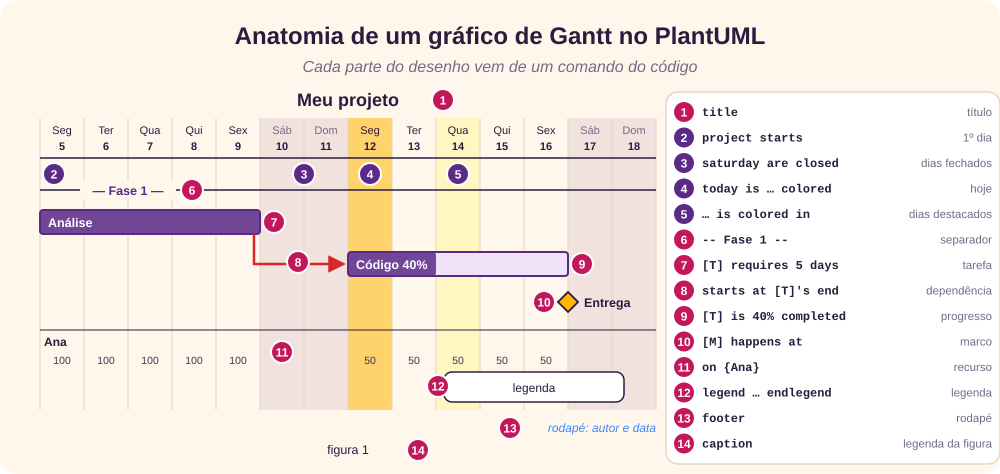
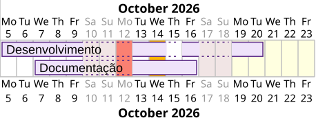
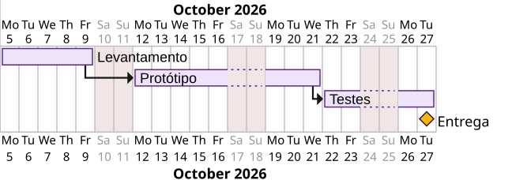
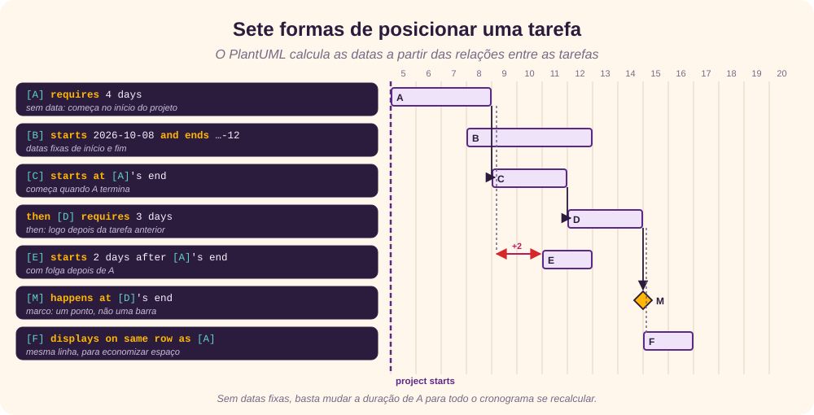
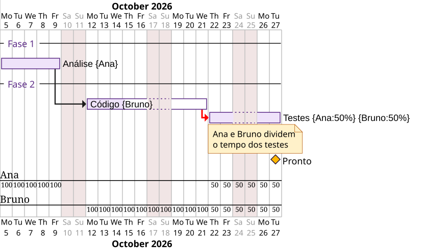

Gantt e PlantUML
O gráfico de Gantt é um gráfico de barras que mostra o cronograma de um projeto: cada tarefa é uma barra no eixo do tempo, com início, duração e dependências. Foi popularizado por Henry Gantt por volta de 1910 a 1915, embora o polonês Karol Adamiecki tenha criado uma ferramenta parecida, o harmonograma, em 1896. [4]
O PlantUML é uma ferramenta de código aberto que desenha diagramas a partir de texto. Em vez de arrastar barras num programa, você escreve o cronograma numa linguagem quase natural, em inglês, e o PlantUML calcula as datas e gera a imagem. [2] [3] [5]
A vantagem é tratar o cronograma como código: ele cabe no controle de versão, pode ser comparado entre versões e se recalcula sozinho quando uma duração muda.
O que é preciso
- Java, para rodar o PlantUML, que é distribuído como um arquivo
plantuml.jar. [6] [16] - Um lugar para escrever e ver o resultado: a extensão PlantUML do VS Code, o servidor on-line do próprio PlantUML ou a linha de comando (
java -jar plantuml.jar projeto.puml). [7] - O texto original também lista o Graphviz, que o PlantUML usa para desenhar vários tipos de diagrama UML, e a sintaxe Creole, que formata textos dentro dos diagramas. [8] [9]
Todos os exemplos deste tutorial foram testados no PlantUML 1.2026.8. O texto original foi escrito para a versão 1.2020.23; as diferenças encontradas estão indicadas ao longo do texto. [1]
Estrutura de um arquivo
Todo gráfico de Gantt fica entre @startgantt e @endgantt. Cada linha é uma frase no formato sujeito, verbo e complemento, e os nomes de tarefas e marcos vão entre colchetes. [2]
@startgantt
' comentário de uma linha
/' comentário de
várias linhas '/
project starts 2026-10-05
[Levantamento] requires 5 days
@endganttComentários começam com aspa simples (') ou ficam entre /' e '/; não aparecem no desenho. A figura abaixo mostra de onde vem cada parte de um gráfico.

Configurando o projeto
Estes comandos definem o gráfico como um todo. Vários deles, como title, footer, caption, legend e scale, são comuns a todos os diagramas do PlantUML. [10]
| Comando | Exemplo | Para que serve |
|---|---|---|
title | title Meu primeiro\nprojeto | Título acima do gráfico; \n quebra a linha. |
footer | footer Giovani\n18/01/2021 | Rodapé, abaixo do gráfico. |
caption | caption figura 1 | Legenda da figura, útil ao exportar para um documento. |
legend … endlegend | legend right … endlegend | Caixa de legenda (left, right, top, bottom ou center). |
scale | scale 1.5 · scale 2/3 · scale max 1024 width | Aumenta ou reduz a imagem, por fator, fração ou tamanho máximo. |
hide footbox | hide footbox | Esconde a régua de datas de baixo; a de cima continua. |
printscale | printscale weekly | Compacta a linha do tempo: daily (padrão), weekly, monthly, quarterly ou yearly. |
project starts | project starts 2026-10-05 | Primeiro dia do projeto; tarefas sem data começam nele. |
today is | today is 14 days after start and is colored in Yellow | Destaca o dia de hoje, por data ou por número de dias desde o início. |
Duas observações de versão:
- O texto original cita
printscale diary; o valor correto édaily. As escalasquarterlyeyearly, e o comandozoom, vieram depois. [2] - As versões recentes acrescentam à esquerda uma tabela com início, fim e duração de cada tarefa. Para escondê-la, use
hide column start,hide column endehide column duration, como nos exemplos deste tutorial.
O comando language muda o idioma do calendário, com o código ISO 639. Nos testes, funcionou em alemão (de), mas o português e o italiano ainda saem em inglês; por isso as figuras reais deste tutorial mostram meses e dias em inglês.
Calendário
O calendário diz quais dias contam como dias de trabalho e quais merecem destaque.
saturday are closed
sunday are closed
2026-10-12 is closed ' feriado
2026-10-12 is colored in Salmon
2026-10-19 to 2026-10-23 are colored in LightYellow
today is 2026-10-14 and is colored in #FFB703
[Desenvolvimento] requires 10 days
[Desenvolvimento] pauses on 2026-10-15
[Documentação] starts 2026-10-07
[Documentação] ends 2026-10-16
- Dias fechados (
are closed,is closed) não contam para ninguém: uma tarefa de 10 dias se estende por cima deles. Comis opened, um dia fechado volta a ser útil, como um sábado de trabalho. - Pausa (
pauses on) vale só para uma tarefa. A diferença é semântica: o dia fechado indica que o projeto não trabalha naquela data; a pausa indica que aquela tarefa foi suspensa. O texto original escrevepause onna sintaxe, mas a forma aceita épauses on, como no próprio exemplo dele. - Dias coloridos (
is colored in,are colored in) só destacam visualmente, sem mudar a contagem. Comare named, um intervalo recebe um nome, como[Férias].
As cores aceitam os nomes de cores do CSS, como LightYellow e Salmon, ou códigos hexadecimais, como #FFB703. [15]
Tarefas
Uma tarefa é criada ao ser citada pela primeira vez. Há dois jeitos de definir quando ela acontece:
- Dinâmica: só com a duração (
[Protótipo] requires 8 days). O PlantUML a posiciona a partir do início do projeto e das dependências. - Fixa: com datas de início e fim (
[Treinamento] starts 2026-10-19e[Treinamento] ends 2026-11-13).
O texto original usa o verbo lasts, que continua funcionando; a documentação atual prefere requires, que expressa o esforço necessário. [2]
project starts 2026-10-05
saturday are closed
sunday are closed
[Levantamento] requires 5 days
then [Protótipo] requires 8 days
then [Testes] requires 4 days
[Entrega] happens at [Testes]'s end
Outras propriedades da tarefa
| Comando | Para que serve |
|---|---|
[T] is colored in Red/Red | Cor da barra: a primeira é o preenchimento e a segunda, a borda. |
[T] is 70% completed | Progresso: a parte concluída aparece preenchida. |
[T] is deleted | Mostra a tarefa como removida do cronograma. |
[T] links to [[http://plantuml.com]] | Transforma a barra num link, útil em SVG. |
note bottom … end note | Nota abaixo da última tarefa declarada. |
[Nome longo] as [T1] | Apelido curto para usar no resto do código. |
Dependências e marcos
O ponto forte do PlantUML é posicionar tarefas pelas relações entre elas. Mudou uma duração, o cronograma inteiro se recalcula.

[B] starts at [A]'s end: B começa quando A termina. Comwith red bold link, a seta ganha cor e estilo (bold,dashedoudotted).then [B] requires 3 days: atalho para “logo depois da tarefa anterior”.[A] -> [B]: outra forma curta de ligar duas tarefas.[B] starts 2 days after [A]'s end: com folga entre as duas.[M] happens at [A]'s end: um marco, um ponto no tempo, sem duração. Também pode ter data fixa:[M] happens 2026-10-30.[B] displays on same row as [A]: desenha B na mesma linha de A, para economizar espaço.
Recursos e separadores
Para dizer quem faz cada tarefa, use chaves com o nome e, se quiser, a porcentagem de dedicação. Abaixo do gráfico, o PlantUML mostra a carga de cada pessoa por dia.
-- Fase 1 --
[Análise] on {Ana} requires 5 days
[Análise] is 100% completed
-- Fase 2 --
[Código] on {Bruno} requires 8 days
[Código] starts at [Análise]'s end
[Código] is 40% completed
[Testes] on {Ana:50%} {Bruno:50%} requires 4 days
note bottom
Ana e Bruno dividem
o tempo dos testes
end note
[Testes] starts at [Código]'s end with red bold link
[Pronto] happens at [Testes]'s end
- Separadores (
-- Nome --) dividem o gráfico em fases, setores ou grupos. - Recursos (
on {Ana:50%}) mostram a alocação; comhide resources names, os nomes somem das barras, e com{Ana} is off on 2026-10-20a pessoa fica indisponível num dia. - A nota fica abaixo da tarefa declarada logo antes dela.
Estilo e sprites
A aparência é definida num bloco <style>, parecido com CSS, ou com comandos skinparam. O bloco de estilo é a forma mais nova e recomendada. [11] [12]
<style>
ganttDiagram {
task { FontName Arial; FontSize 12; BackGroundColor #EFE3FA; LineColor #5B2A86 }
milestone { FontSize 12; BackGroundColor #FFB703; LineColor #2B1B3D }
note { FontSize 11; BackGroundColor #FFF1C9; LineColor #B35300 }
}
footer { HorizontalAlignment right }
title { FontSize 20; HorizontalAlignment center }
</style>
skinparam footerFontColor blue| Elemento | Propriedades mais usadas |
|---|---|
task | FontName, FontColor, FontSize, FontStyle, BackGroundColor, LineColor |
milestone | FontColor, FontSize, FontStyle, BackGroundColor, LineColor |
note | FontColor, FontSize, LineColor, BackGroundColor |
title | FontColor, FontSize, FontStyle, HorizontalAlignment |
footer, legend, caption | HorizontalAlignment, FontSize, BackGroundColor, Margin, Padding |
skinparam | footerFontColor, footerFontSize, titleBackgroundColor, titleBorderColor, titleBorderRoundCorner, titleBorderThickness |
FontStyle aceita bold, italic, monospaced, stroked e underlined.
Sprites e ícones
Um sprite é uma pequena imagem codificada em texto, declarada com sprite $nome [15x15/8z] … e usada com <$nome>. Os ícones do conjunto Open Iconic vêm prontos, com a forma <&check>. [13] [14]
Exemplo completo
O texto original termina com um exemplo que junta quase tudo. Abaixo, o resultado gerado pelo PlantUML atual a partir do código do autor, com as três linhas hide column acrescentadas.
![Gráfico de Gantt completo gerado pelo PlantUML para o projeto Entrega SDS 001, de janeiro a fevereiro de 2021. Três fases e uma área de marcos; tarefas em vermelho com progresso parcial, ligadas por setas vermelhas; Treinamento em azul com datas fixas; marcos DevEnd, ReadyDeploy e PDEnd na mesma linha; fins de semana fechados, a semana de 4 a 8 de janeiro em coral, 1º de janeiro em azul claro e o dia 15 marcado como hoje em amarelo. Abaixo, a carga diária de Alice, Giovani, Davi, Camila e Maria, uma legenda, a legenda da figura e o rodapé.](rc_images/PlantUMLExemplo.svg)
Ver o código completo
@startgantt
hide column start
hide column end
hide column duration
<style>
ganttDiagram {
task {
FontName Courrier
FontColor black
FontSize 12
FontStyle bold
BackGroundColor Blue
LineColor blue
}
milestone {
FontColor blue
FontSize 12
FontStyle italic
BackGroundColor gold
LineColor red
}
note {
FontColor DarkGreen
FontSize 10
LineColor lightgreen
BackGroundColor orange\yellow
}
}
footer {
HorizontalAlignment right
}
title {
FontColor black
FontSize 40
FontStyle italic
HorizontalAlignment center
}
</style>
skinparam footerFontColor blue
skinparam footerFontSize 10
skinparam footerFontStyle italic
'skinparam titleBackgroundColor Aqua-CadetBlue
'skinparam titleBorderColor blue
'skinparam titleBorderRoundCorner 15
'skinparam titleBorderThickness 2
' sprites
sprite $printer [15x15/8z] NOtH3W0W208HxFz_kMAhj7lHWpa1XC716sz0Pq4MVPEWfBHIuxP3L6kbTcizR8tAhzaqFvXwvFfPEqm0
' Initialization
caption figure 1
title Projeto<$printer>\nEntrega SDS 001 <&check>
footer Giovani Perotto Mesquita\n18/01/2011 - 13:01
scale 1.5
hide footbox
'printscale weekly
project starts the 2021/01/01
' Day watching
'today is 2021/01/20 and is colored in Yellow
today is 14 days after start and is colored in Yellow
' Close Days
saturday are closed
sunday are closed
2021/01/01 is closed
2021/01/01 is colored in lightblue
2021/01/04 to 2021/01/08 are colored in coral
' Tasks and separators
-- Phase One --
[Prototype design] on {Alice} lasts 13 days
[Prototype design] links to [[http://plantuml.com]]
'note bottom
' memo1 ...
' memo2 ...
' explanations1 ...
' explanations2 ...
' <img:http://plantuml.com/logo3.png>
'end note
[Config prototype] on {Giovani} lasts 7 days
'note bottom
' WiFi <&wifi>
' |= |= table |= header |
' | a | table | row |
' |<#FF8080> red |<#80FF80> green |<#8080FF> blue |
' <#yellow>| b | table | row |
'end note
-- Phase Two --
[QA prototype] on {Davi} lasts 9 days
[Test prototype] on {Camila:50}{Giovani:50} lasts 6 days
-- Phase Three --
[Deploy] lasts 1 day
'note bottom
' Example of Tree
' |_ First line
' |_ **Bom(Model)**
' |_ prop1
' |_ prop2
' |_ prop3
' |_ Last line
'end note
[PD audict] lasts 10 days
[Trainning] on {Camila:50}{Maria:50} starts 2021/01/18
[Trainning] ends 2021/02/12
legend right
This is a legend
endlegend
-- Milestones --
' Tasks flow
[Config prototype] starts at [Prototype design]'s end with red bold link
[QA prototype] starts at [Prototype design]'s end with red bold link
[Test prototype] starts at [Config prototype]'s end with red bold link
[Test prototype] starts at [QA prototype]'s end with red bold link
[Test prototype] pauses on monday
[Deploy] starts at [Test prototype]'s end with red bold link
[PD audict] starts at [Deploy]'s end with red bold link
' Tasks progress
[Prototype design] is 70% completed
[Config prototype] is 0% completed
[QA prototype] is 23% completed
[Test prototype] is 0% completed
[Deploy] is 0% completed
[PD audict] is 0% completed
[Trainning] is 20% completed
' Milestones
[DevEnd] happens at [Prototype design]'s end
[DevEnd] happens at [QA prototype]'s end
[ReadyDeploy] happens at [Test prototype]'s end
[ReadyDeploy] displays on same row as [DevEnd]
[PDEnd] happens at [PD audict]'s end
[PDEnd] displays on same row as [ReadyDeploy]
' Colors
[Prototype design] is colored in Red/Red
[Config prototype] is colored in Red/Red
[QA prototype] is colored in Red/Red
[Test prototype] is colored in Red/Red
[Deploy] is colored in Red/Red
[PD audict] is colored in Red/Red
[DevEnd] is colored in White/Black
[ReadyDeploy] is colored in Gray/Black
@endganttNo código, o bloco de estilo define fontes e cores; sprite e <&check> colocam ícones no título; o calendário fecha os fins de semana e o dia 1º de janeiro; as tarefas usam recursos, dependências com setas vermelhas, pausa às segundas e progresso; e os marcos ficam na mesma linha com displays on same row as.
Referência rápida
| Quero… | Comando |
|---|---|
| começar o projeto | project starts 2026-10-05 |
| fechar fins de semana | saturday are closed · sunday are closed |
| fechar ou reabrir um dia | 2026-10-12 is closed · 2026-10-17 is opened |
| destacar dias | 2026-10-19 to 2026-10-23 are colored in LightYellow |
| marcar hoje | today is 2026-10-14 and is colored in Gold |
| criar uma tarefa | [T] requires 5 days |
| fixar datas | [T] starts 2026-10-19 · [T] ends 2026-11-13 |
| encadear | [B] starts at [A]'s end · then [B] … · [A] -> [B] |
| criar um marco | [M] happens at [T]'s end |
| indicar progresso | [T] is 40% completed |
| alocar pessoas | [T] on {Ana:50%} {Bruno} requires 4 days |
| pausar uma tarefa | [T] pauses on monday |
| separar fases | -- Fase 2 -- |
| mudar a escala | printscale weekly |
| esconder a tabela lateral | hide column start · hide column end · hide column duration |
Revisão rápida
Tente responder antes de abrir cada pergunta.
1. Entre quais marcadores fica o código de um gráfico de Gantt?
@startgantt e @endgantt.
2. Qual a diferença entre uma tarefa dinâmica e uma fixa?
A dinâmica só tem duração (requires) e é posicionada pelo PlantUML a partir do início do projeto e das dependências; a fixa tem datas de início e fim (starts/ends).
3. Qual a diferença entre um dia fechado e uma pausa?
O dia fechado vale para o projeto inteiro (is closed); a pausa vale só para uma tarefa (pauses on).
4. Como fazer a tarefa B começar logo depois da tarefa A?
[B] starts at [A]'s end, ou declarar B logo depois de A com then [B] requires …, ou [A] -> [B].
5. Como representar um marco?
Com happens: [Entrega] happens at [Testes]'s end ou [Entrega] happens 2026-10-30. Ele aparece como um losango, sem duração.
6. Como dizer que Ana e Bruno dividem uma tarefa de 4 dias?
[Testes] on {Ana:50%} {Bruno:50%} requires 4 days.
7. Qual valor de printscale mostra um dia por coluna?
daily, que é o padrão; o texto original escreve “diary”, que não é aceito.
8. O que acontece com uma tarefa de 5 dias que começa numa sexta, com fins de semana fechados?
Ela pula sábado e domingo e termina na quinta seguinte: os dias fechados não contam.
Referências
- Giovani Perotto Mesquita, “Building Gant diagrams with PlantUML”, GitHub, texto original deste tutorial, github.com/GiovaniPM/MyCourses/blob/master/PlantUML/Course Gant.md.
- PlantUML, “Gantt Diagram”, acesso em 25/09/2026, plantuml.com/gantt-diagram.
- PlantUML, site oficial, acesso em 25/09/2026, plantuml.com.
- Wikipedia (em inglês), “Gantt chart”, acesso em 25/09/2026, en.wikipedia.org/wiki/Gantt_chart.
- Wikipedia (em inglês), “PlantUML”, acesso em 25/09/2026, en.wikipedia.org/wiki/PlantUML.
- PlantUML, “Download”, acesso em 25/09/2026, plantuml.com/download.
- Visual Studio Marketplace, “PlantUML” (jebbs), acesso em 25/09/2026, marketplace.visualstudio.com/items?itemName=jebbs.plantuml.
- Graphviz, site oficial, acesso em 25/09/2026, graphviz.org.
- PlantUML, “Creole”, acesso em 25/09/2026, plantuml.com/creole.
- PlantUML, “Common commands”, acesso em 25/09/2026, plantuml.com/commons.
- PlantUML, “Skinparam”, acesso em 25/09/2026, plantuml.com/skinparam.
- PlantUML, “Style (evolution)”, acesso em 25/09/2026, plantuml.com/style-evolution.
- PlantUML, “Sprite”, acesso em 25/09/2026, plantuml.com/sprite.
- PlantUML, “Open Iconic”, acesso em 25/09/2026, plantuml.com/openiconic.
- W3C, CSS Color Module Level 4, “Named colors”, acesso em 25/09/2026, w3.org/TR/css-color-4/#named-colors.
- PlantUML, repositório no GitHub, acesso em 25/09/2026, github.com/plantuml/plantuml.